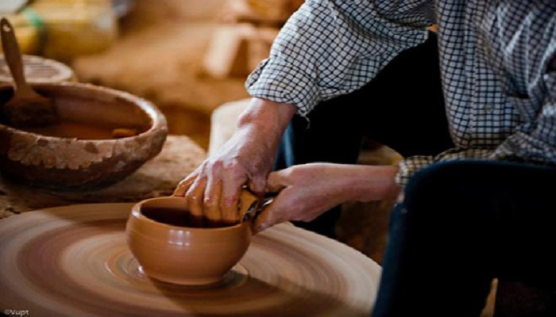
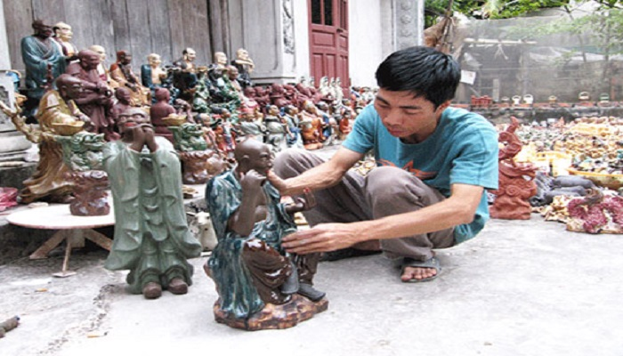
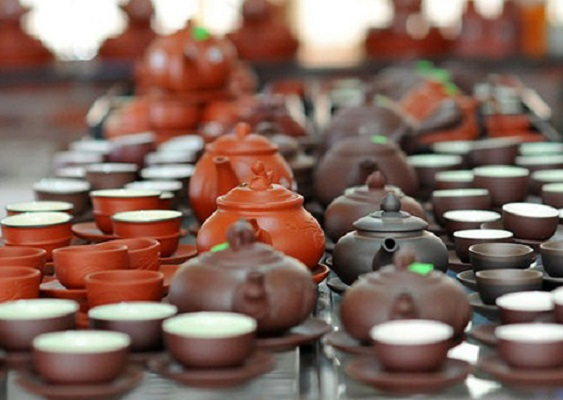

Du lịch Vĩnh Phúc khám phá làng gốm Hương Canh
Ở miền Bắc nói đến đồ gốm và nghệ thuật gốm ai cũng nghĩ đến Hương Canh, Bình Xuyên, Vĩnh Phúc. Đây cũng là điểm du lịch hấp dẫn du khách mỗi khi có cơ hội đến Vĩnh Phúc.
1. Lịch sử làng gốm Hương Canh
Tương truyền sau khi đánh bại Quận Hẻo Nguyễn Danh Phương, triều đình Lê – Trịnh đã phái quan Nội Hầu là Trịnh Xuân Biền về phủ dụ dân chúng. Thấy xóm xơ xác tiêu điều, dân chúng phiêu bạt, những n cư không kế sinh nhai, ông Trịnh Văn Biền đã giúp dân phục hồi sản xuất nông nghiệp và đem người đến dậy dân làng nghề cang chĩnh. Khi ông qua đời, dân làng thương tiếc, lập miếu thờ, tôn ông làm tổ sư tổ nghề gốm. Đến nay làng gốm đã phát triển với quy mô rộng lớn hơn, là điểm du lịch đặc sắc và vô cùng hấp dẫn.
2. Đặc sắc ở làng gốm Hương Canh
Sản phẩm gốm tạo ra ở ngôi làng này chống được sự thẩm thấu, ngăn được ánh sáng, giữ được bền hương vị nguyên chất của những thứ được đựng bên trong, khi pha trà thì giữ được nhiệt độ rất lâu, đựng không bị mất hơi…bởi điều kiện thổ nhưỡng ở nơi đây chủ yếu là đất sét xanh, có nhiều thịt nên khi sản phẩm ra lò rất cứng và có nhiều màu đặc trưng.
Trải qua nhiều biến cố thăng trầm của lịch sử, nghề gốm nơi đây vẫn giữ được nét tinh túy xưa truyền lại, song cơ chế thị trường đã và đnag làm cho ngành nghề này bị mai một.
Tuy nhiên đến làng gốm này bạn sẽ được tham quan và tìm hiểu cách làm các loại đồ gốm như: vại, chĩnh, chậu, lọ, tiểu sành. Với đặc điểm chống được sự thẩm thấu, ngăn được ánh sáng, giữa được bền hương vị nguyên chất của những thứ đựng bên trong, từ xưa gốm ở đây rất được người dân ưa chuộng.
Ngày nay để đáp ứng nhu cầu, thị hiếu của người tiêu dùng, các nghệ nhân làng gốm Hương Canh vừa duy trì mặt hàng sản xuất truyền thống, vừa đổi mới đa dạng mẫu mã. Do vậy gốm Hương Canh hiện nay còn cho ra lò các loại gốm xây dựng và gốm mỹ nghệ đẹp mắt.
Du khách đến làng gốm Hương Canh không chỉ thấy gạch đất ngổn ngang như hồi nào, mà còn là đồ gỗ mỹ nghệ, tranh, tượng , phù điêu… đậm hồn quê đất Việt, lại được dịp tham gia vào việc chế tác, tạo dáng gốm thủ công thú vị.
Đến với làng gốm Hương Canh vào bất kỳ mùa nào bạn cũng được thấy cảnh mua bán đồ gốm, cảnh làm gốm điêu luyện của các nghệ nhân Hương Canh, cảnh những khách du lịch không ngại đất bẩn tự tay làm những đồ gốm cho mình và người thân. Bạn cũng có thể mua về làm quà những đồ gốm dùng trong gia đình hay những đồ trang trí như tranh gốm…